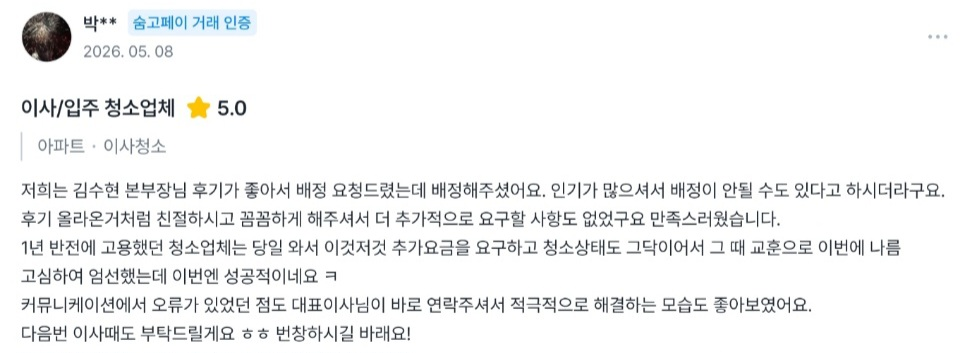
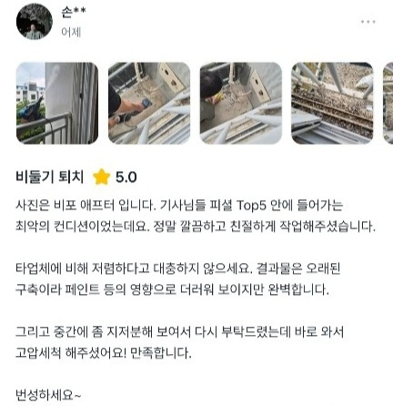
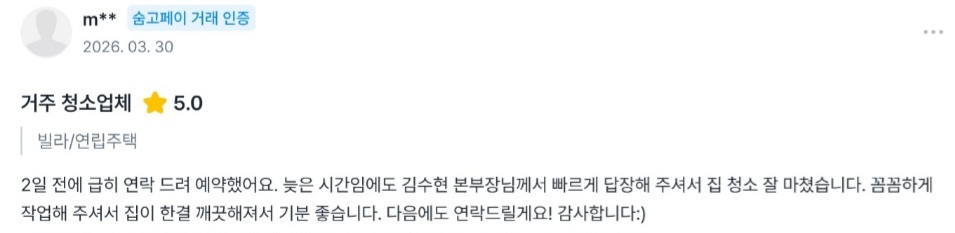
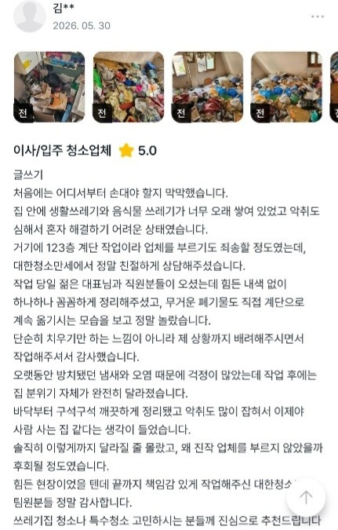

“친절하게 설명해주시고 깨끗하게 해주셔서 감사합니다.”
깨끗한 공간,
새로운 시작을 선물합니다.
새로운 시작을 선물합니다.
누군가에게는 설레는 내일을
누군가에게는 다시 일어설 용기를
누군가에게는 마지막 배려와 따뜻한 위로를
누군가에게는 다시 일어설 용기를
누군가에게는 마지막 배려와 따뜻한 위로를
'기프트클린'은 깨끗한 공간을 선물한다는 의미를 담고 있습니다.
'대한'에는 더 넓은 세상과 사람들을 향한 마음을,
'만세'에는 더 나은 공간을 되찾았을 때의 기쁨을 담았습니다.
기프트클린은 쓰레기집 정리, 유품정리, 고독사 특수청소, 비둘기 배설물 청소, 폐기물 처리처럼 일반 청소 기준으로 판단하기 어려운 특수현장을 중심으로 상담합니다. 입주청소, 이사청소, 사무실·상가청소도 함께 진행합니다.
서비스의 종류는 다르지만 고객이 저희를 찾는 이유는 결국 같습니다.
입주를 준비하는 공간도,
정리가 필요한 공간도,
오랫동안 손대지 못했던 공간도.
기프트클린은 현장마다 다른 상황을 확인하고 필요한 작업을 안내하며, 고객의 새로운 시작을 함께합니다.
기프트클린은 베스트타임즈 언론보도를 통해 2026 부평구 우수 방문청소업체 및 맞춤형 방문 청소 서비스 제공 업체로 소개되었습니다.
특수청소는 현장마다 오염 원인, 폐기물 양, 냄새, 출입 조건이 다릅니다.
기프트클린은 사진과 영상을 먼저 확인하고 작업 범위, 추가 비용 가능성, 준비사항을 안내합니다.
입주청소와 이사청소도 상담하지만, 주요 상담 범위는 쓰레기집 청소 · 유품정리 · 비둘기 배설물 청소 · 폐기물 처리 같은 특수현장입니다.
오염 범위, 악취, 폐기물, 출입 조건을 확인한 뒤
가능한 작업과 어려운 부분을 먼저 설명합니다.
동의 없는 추가 작업은 진행하지 않습니다.
일반 청소로 끝나기 어려운 오염, 악취, 폐기물 현장을 먼저 확인합니다.
폐기물 양, 바닥 오염, 악취 상태를 보고 작업 인원과 범위를 산정합니다.
남겨진 물품과 공간 상태를 확인하고 조심스럽게 정리 범위를 안내합니다.
고인 발견 장소의 오염 범위와 악취, 폐기물 처리 필요 여부를 확인합니다.
비둘기 배설물, 둥지, 유입 경로, 차단 가능 범위를 함께 확인합니다.
현장 폐기물 종류와 양에 따라 수거와 정리 범위를 안내합니다.
그을음, 냄새, 오염 범위를 확인해 가능한 청소 범위를 안내합니다.
화재복구, 누수복구 등 보험 접수가 필요한 현장은 상담 시 필요한 서류 발급 가능 여부를 함께 안내합니다.
※ 보험금 지급 여부는 보험사의 심사 및 가입 약관에 따라 달라질 수 있습니다.
새 공간이나 이사 후 공간도 평수와 오염도에 따라 상담합니다.
업무공간과 영업공간의 상태에 맞춰 청소 범위를 안내합니다.
특수청소·쓰레기집청소·유품정리·고독사 특수청소·화재청소·침수청소·폐기물 처리는 전국 출장 가능합니다. 입주청소·이사청소·거주청소·비둘기 퇴치는 수도권 중심으로 운영합니다.
입주청소 / 이사청소 / 거주청소 / 비둘기 퇴치
특수청소 / 쓰레기집청소 / 유품정리 / 고독사 특수청소 / 화재청소 / 침수청소 / 폐기물 처리
서울, 인천, 부천, 부평, 송도, 청라, 검단, 계양, 수원, 용인, 성남, 고양, 김포, 파주, 안산, 시흥, 화성, 평택, 대전, 세종, 충청, 강원, 부산, 대구, 울산, 광주, 전라, 경상 지역
작업 범위와 현장 상태에 따른 세부 견적은 상담 시 안내드립니다.
사진이나 영상을 보내주시면 작업 범위와 예상 견적을 먼저 안내드립니다.
청소 비용은 평수, 오염도, 짐 유무, 폐기물 양, 작업 범위, 장비 사용 여부에 따라 달라집니다. 확정되지 않은 금액을 먼저 안내하기보다 사진과 현장 상태를 확인한 뒤 예상 비용을 안내드립니다.
※ 아직 확정된 가격표가 아닌 상담 기준 안내입니다.
※ 현장 상황 및 오염도에 따라 비용이 달라질 수 있습니다.
※ 추가 작업 발생 시 사전 안내 후 진행됩니다.
※ 사진이나 영상을 보내주시면 예상 견적 안내가 가능합니다.
쓰레기집 청소, 비둘기 퇴치, 유품정리 등 특수현장 사례를 먼저 정리합니다. 입주·이사청소 사례도 함께 확인하실 수 있습니다.
실제 고객님들이 남겨주신 후기입니다.





사진 후기 아래에 실제 후기 문구를 함께 정리했습니다.
“친절하게 설명해주시고 깨끗하게 해주셔서 감사합니다.”
“사진으로 먼저 상담받을 수 있어서 편했어요.”
“설명 듣고 진행해서 걱정이 덜했어요.”
“어디서부터 해야 할지 막막했는데 정리해주셔서 감사합니다.”
옆으로 넘겨서 후기를 확인하실 수 있습니다.
창틀, 주방, 욕실, 수납장처럼 입주 전후에 함께 확인하면 좋은 항목을 정리합니다.
입주 전 확인 기준을 항목별로 정리하는 정보형 글입니다.
전체 구조, 창틀, 주방, 욕실, 베란다, 오염 부위를 먼저 보내주시면 작업 범위 안내가 더 정확해집니다.
사진상담 전에 필요한 사진 기준을 정리하는 글입니다.
평수, 오염 상태, 작업 범위, 추가 안내사항을 정리해 실제 작업사례 글로 확장합니다.
실제 현장 기준으로 작업 범위를 정리하는 글입니다.
폐기물 양, 냄새, 바닥 오염, 작업 인원과 시간을 텍스트로 기록하는 구조입니다.
실제 현장 기준으로 작업 범위를 정리하는 글입니다.
분변 위치, 둥지 여부, 외부 난간 작업 가능 여부, 작업 가능 범위를 상담 전에 확인합니다.
분변·둥지·작업 가능 범위 기준으로 정리합니다.
오염 범위, 냄새 정도, 폐기물 양, 출입 가능 시간, 엘리베이터 사용 여부를 먼저 확인하면 상담이 빨라집니다.
오염 범위와 출입 조건을 기준으로 정리합니다.
특수청소는 생활 오염을 닦는 일반 청소와 달리 악취, 폐기물, 배설물, 그을음, 장기간 방치된 오염처럼 현장 상태를 먼저 판단해야 하는 청소입니다. 작업 전 사진과 영상을 확인해 범위와 위험 요소를 먼저 안내합니다.
폐기물 양, 바닥 오염, 악취, 출입 조건을 먼저 확인합니다. 현장 상태에 따라 분리배출, 폐기물 처리, 바닥 청소, 추가 소독·탈취 가능 여부를 안내합니다.
비둘기 배설물은 냄새와 오염뿐 아니라 둥지, 알·새끼, 재유입 경로를 함께 봐야 합니다. 분변 제거만 필요한지, 차단 작업이 필요한지 사진으로 먼저 확인합니다.
네, 가능합니다. 현장 사진이나 영상을 보내주시면 오염도, 짐 유무, 폐기물 양, 작업 범위를 확인해 예상 견적을 안내드립니다. 다만 사진에 보이지 않는 오염이나 추가 작업이 있는 경우 현장에서 금액이 변동될 수 있습니다.
일정이 맞는 경우 당일 작업도 가능합니다. 작업 종류, 현장 상태, 이동 거리, 투입 인원에 따라 가능 여부가 달라질 수 있어 상담 시 확인이 필요합니다.
입주청소는 새로 들어가기 전 빈 공간을 기준으로 진행하는 경우가 많고, 이사청소는 이전 거주 흔적이나 생활 오염이 남아 있는 경우가 많습니다. 현장 상태에 따라 작업 범위와 비용이 달라질 수 있습니다.
네, 가능합니다. 생활쓰레기, 음식물 쓰레기, 악취, 바닥 오염, 폐기물 양을 확인한 뒤 작업 범위와 예상 비용을 안내드립니다. 사진 확인 후 예상 견적 안내가 가능합니다.
현장 상태에 따라 분변 제거, 둥지 제거, 알·새끼 확인, 유입경로 차단막 설치 등을 진행합니다. 스카이 장비나 외부 작업이 필요한 경우 별도 안내드립니다.
상담 당시 확인되지 않은 심한 오염, 폐기물 증가, 추가 공간, 추가 작업 요청, 장비 사용, 유료 주차비 등이 있는 경우 추가 비용이 발생할 수 있습니다. 추가 작업은 사전 안내 후 진행됩니다.
작업 완료 후 3일 이내 접수 가능합니다. 사진 또는 영상으로 확인 후 작업 범위 내 미흡한 부분인지 확인하여 안내드립니다. 작업 완료 후 새로 발생한 오염이나 사용 중 발생한 오염은 A/S 대상에서 제외될 수 있습니다.
※ 일정 변경은 작업일 기준 3일 전까지 1회 가능합니다.
※ 고객 연락 두절, 고객 부재, 현장 출입 불가, 주소 오기재 등의 경우 예약금은 환불되지 않습니다.
※ 천재지변, 사고, 입원 등 불가피한 사유는 협의 후 처리될 수 있습니다.
※ 비둘기 재유입의 경우 시공 문제로 확인되는 경우에 한하여 별도 확인 후 A/S가 진행될 수 있습니다.
※ 새로운 유입경로 발생, 건물 구조 변경, 외부 환경 변화 등으로 인한 재유입은 A/S 대상에서 제외됩니다.
※ 건물 구조상 완전한 차단이 어려운 경우가 있을 수 있으며, 이에 따른 재유입은 A/S 대상에서 제외됩니다.
유품, 귀중품, 현금, 귀금속, 통장, 신분증, 중요 서류 등은 고객 또는 유가족이 사전에 직접 확인 및 보관해 주셔야 합니다.
기프트클린은 고객이 지정한 작업 범위 내에서 작업을 진행하며, 미확인 유품 및 귀중품의 분실, 훼손, 누락에 대한 책임을 지지 않습니다.
유품정리 서비스의 경우에도 귀중품, 현금, 중요 서류는 작업 전 고객 또는 유가족이 우선 확인하는 것을 권장드립니다.
작업 중 발견되는 유품 및 귀중품은 고객에게 안내할 수 있으나, 보관·감정·분류 의무는 없습니다.
기프트클린은 작업자와 고객의 안전을 최우선으로 합니다.
위와 같은 상황이 발생할 경우 고객과 우선 일정 변경을 협의합니다.
일정 변경이 어렵거나 작업 진행이 불가능한 경우 예약금은 전액 환불됩니다.
다만 고객 미고지 사항, 현장 상태 상이, 현장 위험요소 발견, 고객 요청에 의한 작업 중단 등으로 인해 작업이 중단되는 경우에는 진행된 작업 범위에 대한 비용이 발생할 수 있습니다.
안전 확보가 어려운 상황에서 무리하게 작업을 진행하여 발생할 수 있는 사고를 예방하기 위해 작업을 제한 또는 중단할 수 있습니다.
다음 사항은 기프트클린의 책임 범위에 포함되지 않습니다.
※ 기프트클린은 작업 전 확인 가능한 범위 내에서 작업을 진행하나, 건물 및 자재의 상태, 오염도 및 현장 환경에 따라 결과가 달라질 수 있습니다.
체계적으로 함께할 지역 파트너를 찾습니다.
현장을 대하는 태도, 고객에게 안내하는 방식,
추가 작업을 설명하는 기준까지 함께 배워갑니다.
자체 현장관리 프로그램으로 일정, 현장 정보, 작업 내용, 정산 흐름을 기록하고 공유합니다.
함께하는 파트너가 현장에 집중할 수 있도록 상담부터 일정 공유, 작업 안내, 정산까지 명확하게 운영합니다.